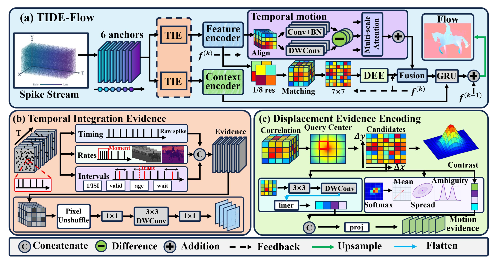

Figure 3: Tiers and predictions on three held-out LVOS videos (head R31c). Rows 1 and 2: the method keeps a fast-moving target that ALGM 0.98 has lost (ALGM predicts no mask in the...
Figure 1 : Illustration of the recovery of the PrO posterior via KMED. Experimental details are given in Appendix B.3 . (a) KMED-PrO yields a more accurate representation of the Pr...
构造从预测分布通向 PrO 后验的同伦路径，路径变化率可以显式计算。用核均值嵌入动力学移动等权粒子，通过经验协方差预条件、IMQ 核及正则线性系统求速度。每个观测到来后自适应积分到伪时间终点，不依赖预测密度求值，也不使用重要性权重或重采样。目标本身的免额外超参数性质不代表数值算法免调参，带宽、正则及步长仍需指定。
阅读时需要把方法设计与主要结果一起看：原始表2，N=128、10条轨迹、500次观测，d=25 时下一观测的时间平均 NLPD 为 KMED-PrO 0.678±0.060、EKF-Bayes 0.793±0.087、EKF-PrO 0.866±0.123，越低越好。d=2/50 同样优于这两个已实现对照。表3 的 d=10 从32到128粒子，NLPD由0.768降至0.678。二维能量传感器示例只在展示的四个检查点覆盖真实状态，不能当全轨迹95%覆盖保证。实验为 CPU float64，未独立复现。
如何在空间特征降采样之前保存互补的脉冲时间证据，并在相关匹配后显式描述位移歧义。需要区分编码更充分与真实异步建模，局部固定窗内使用时间统计不等于逐事件处理，也不能把光流精度改善直接推成属性识别或预警收益。
对当前主题的关键意义在于：原始应用领域：积分发放式 spike camera 的稠密光流。可迁移模块或训练目标：原始时间模式、时间矩、边界区间和结构化位移歧义。对应在研问题：P2 原生时间证据保留，P4 压缩前的瞬态保护。预期计算和显存影响：原论文模型更小但仍有全配对相关体，迁移只取 TIE 时另测成本。主要失效条件或数据风险：Event 与 spike 物理不同，居中窗及后继脉冲泄漏，稀疏背景区间不稳定。最小验证实验：在 TriPro 的 Event 分支固定骨干和预算，仅比较计数、计数加时间矩、因果边界区间三个输入，按身份隔离并注入时间抖动，测属性mA、稀有类召回及全流程资源。
方法与关键创新

Figure 2 : TIDE-Flow architecture. (a) Each flow update combines temporal motion evidence with local displacement evidence. (b) TIE preserves firing patterns and inter-spike interv...
TIE 同时编码原始二值模式、3/7/13/25长度的发放率、时间一阶矩，以及五个探针位置的边界感知发放间隔。邻域重排进通道后再学习降维。DEE 把候选相关值组织成二维位移网格，结合位置、分散度和峰信息，送入差分相关循环更新。整体有六个时间锚点与六次流场更新，1/4分辨率运动路径和1/8分辨率匹配路径分工。
阅读时需要把方法设计与主要结果一起看：原始表1，PHM Δt=10 的平均 AEPE/PO 为0.584/13.21%，Spike2Flow++ 为0.620/14.12%。Δt=20 时 PO 从18.11%降至16.75%，但 AEPE 从1.236略变差至1.241，不是所有指标全胜。表2，在500×800输入下2.519M参数、692.0G MACs、168.7ms，Spike2Flow++ 为8.650M、1216.6G、226.7ms，时延下降约25.6%。50K步消融的完整模型为0.6401/14.44%，不要与100K步主表混用。
![Figure 3: Tiers and predictions on three held-out LVOS videos (head R31c). Rows 1 and 2: the method keeps a fast-moving target that ALGM 0.98 has lost (ALGM predicts no mask in these frames). Row 3: the video where the method does worst against ALGM; ALGM keeps the target (a child), the method has lost it. These frames already run the fallback (ALGM’s own merging), so the loss happened earlier and persists through the memory. Red: high tier; orange: middle tier; white outline: the method’s predicted mask; dashed blue: ALGM 0.98’s. Frames are annotated frames where one of the two predicts no mask, whichever is more frequent in that video. Tiers replayed from the run’s own predictions through the reference implementation, whose decisions the timed run equals.](../assets/figures/aae522ee5c2aa438.png)